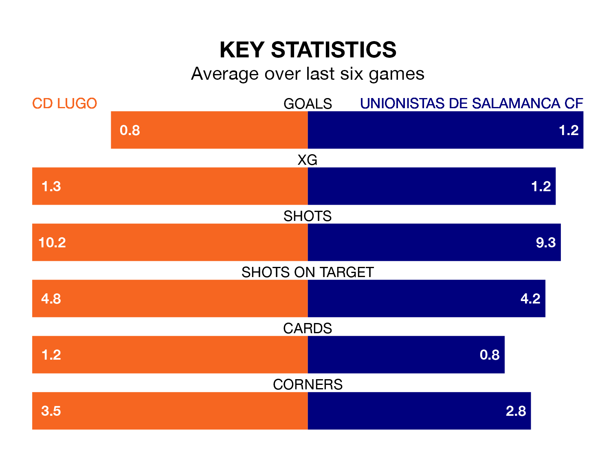

CD Lugo host Unionistas de Salamanca CF on Sunday at the Estadio Anxo Carro in Primera Division RFEF Group 1.
In their last league match, on March 3, Lugo lost to Deportivo La Coruña 4-1 away, with their goal scored by Luis Alfonso Ledesma Galán.
Unionistas de Salamanca also lost, 2-0 at home against Celta de Vigo B on March 2.
With 20 goals in 26 games so far this season, Lugo are scoring at below the league average rate with 0.8 goals per game. And they are conceding at an average rate, letting in 26 goals at a rate of 1.0 per game.
Unionistas de Salamanca are also below average scorers, with 0.8 goals per game, compared to a league average of 1.0. They have also conceded 0.8 goals per game.
The visitors are ninth in the table after 26 games, of which they have won eight and drawn 11, earning 35 points.
The home side are one place behind Unionistas de Salamanca in 10th, with nine wins and eight draws putting them on the same number of points.
In Ledesma Galán, Lugo have one of the league's most on-form strikers so far this season. He has notched six goals in 20 appearances, to sit ninth in the scoring charts.
His goal rate of one every 267 minutes is slightly quicker than that of Borislav Ivaylov Stankov, Unionistas de Salamanca's top scorer with a goal every 228 minutes, and a total of four goals in 20 games.
Lugo are in mixed form in Primera Division RFEF Group 1, with two wins and three draws from their last six games.
And also with two wins and three draws over that period, the away team's form is identical – they have both taken nine points from 18.
Updated: 09:34 (UTC), 08/03/24